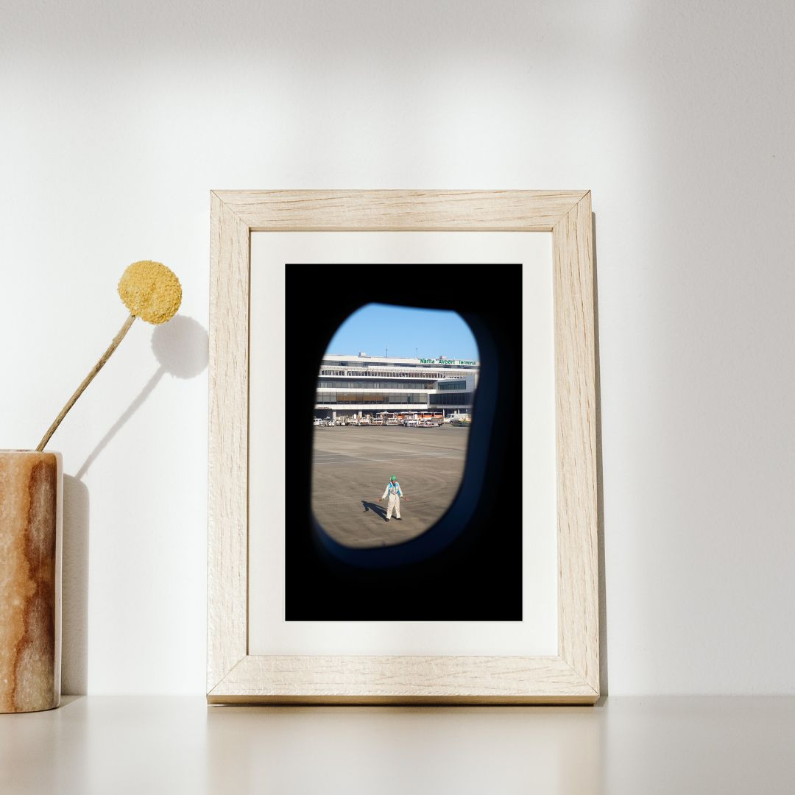
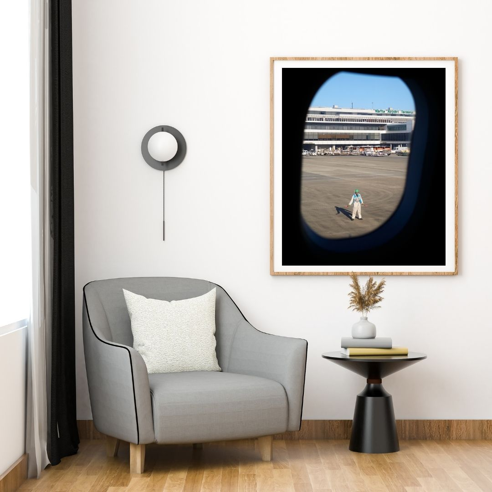

Réf. : NARITA
60€
Tirage Open Edition signé imprimé sur papier Epson Premium Luster, Tirage signé et numéroté, imprimé sur papier Epson Mat Archival et limité à 30 exemplaires.
Chaque tirage est disponible en Open Edition (signé mais non limité) ou en Édition Limitée (signée, numérotée, accompagnée d’un certificat d’authenticité). Les tirages sont réalisés sur papier Epson Premium Luster, Epson Premium Semi Gloss ou Epson Mat Archival, garantissant une excellente longévité à chaque tirage. Tous mes tirages sont imprimés avec une Epson ET-8550, une imprimante photo six couleurs avec une encre noire pigmentaire haut de gamme qui assure une fidélité exceptionnelle des noirs et une large gamme de couleurs. Chaque tirage est emballé avec soin — rouleau de protection rigide ou enveloppe cartonnée selon le format — et expédié sous 5 jours ouvrés. Expédition France entière et Europe. Les éditions limitées sont accompagnées de leur certificat d’authenticité signé et numéroté. Cliquez sur un tirage pour choisir votre format, puis utilisez le bouton Commander ce tirage ou contactez-moi directement. Je vous réponds sous 24h. Détails des tirages
L’imprimante
Expédition & packaging
Comment commander ?
FAQ
{kind=link}